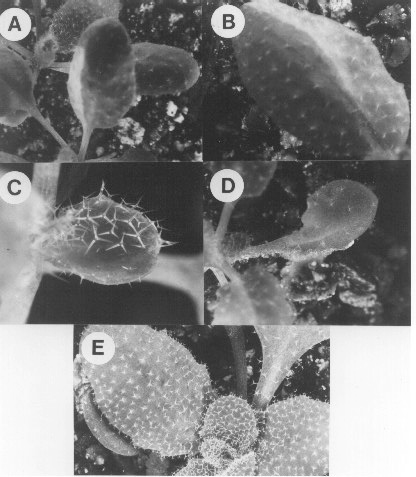

Figure 2. Analysis of whole leaf sectors. A) and B) Leaves containing subepidermal
chlorophyll deficient sectors. C) Normal shaped leaf with a mutant trichome
sector. D) Abnormal leaf with a bubbled cell sector. The mutant cells are
abnormally shaped and cause the leaf to expand asymmetrically. E) Wild-type
leaves.